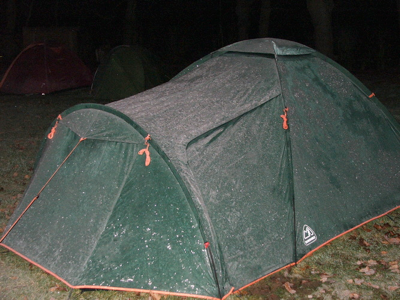

Sub zero camping and sunburn, all in 24 hrs
Last weekend I played my first “competitive” field hockey in Germany since I arrived a few weeks ago. Very early sat morning we met at the petrol station close to the motorway, drank some coffee, then piled into cars and headed north to the outskirts of Berlin. We were promised sun and thats what we got after a bit of a chilly start. By midday the 3 way tournament between local teams was in full swing, and the happy tourists were basking in the sunshine between games. Before long people began to slap on the titanium dioxide sun cream, in April!
Being a seasoned Weymouth hockey easter tournament veteran, I should have known about the deceptive power of the spring sunshine, but I declined the white goo in favour of a Buelles baseball cap. Sure, it kept the sun off my face, or so I assumed. However, my neck got a good toasting, not that I noticed at the time of course.
We went on to win the last game with a few nice goals, and I even managed to play a few minutes here and there on the water based astro, a new surface to me. Somewhere between my preferred surface of grass, and the hard sand filled variety. I found myself unable to stop any balls moving at more than 5 mm/sec. My “wobbling” was also sadly defective, and my hitting lacked power and direction (which is unusual). Ok, being able to slide on the floor without removing your skin is nice, but I found it very bouncy, with the ball in the D mostly being airborne enough for it to be rather dangerous... I’m not sure about it at all. Give me a well kept grass pitch and a leather ball any day, or maybe my home turf of the glorious UEA astros.
With the running about after balls done with, we retired to the BBQ and the bar for pork steaks and strong continental lager beer, followed by a shower, then more beer and some mint liqueur stuff. The team looked after me very well, and I’m very lucky to have fallen in with a great bunch of lads. Maybe I will be able to understand what they are saying soon. I learned the alphabet this week, but that’s not much help in the pub. The night came to an end with a little table dancing and some singalong pop, then off to the tents...
Carefully avoiding any interaction with the nazi party who were celebrating Hitler’s birthday in the party room on the end of the city owned clubhouse, we crossed the grass, and settled into our hopefully cosy sleeping bags. Despite being rather full of beer, and expecting its warming effects to aid in the transition to slumber, I rapidly came to the conclusion that, in fact, it was rather nippy out, and began to rue my failure to bring a roll mat to lie on. It was cold. It woke me up several times. I wasn’t over happy.
At sun up, we emerged from our canvas castles, and mirthfully remarked upon the frost covered fabric of our fabric abodes and the ice coating the grass we were now standing on. Perhaps the camping idea was a slight mistake, considering we now had to drive back south to Dresden, and play a league game. Having braved the arctic night hours, and with a surprising amount of good cheer considering our current conditions of sleep depravation and hangover, we packed up, washed up, and set off.
On arrival at the pitch, following a couple of coffee and sarnie stops, we were faced with more blazing sunshine, even warmer than the day before, and the bumpiest, least level, most dangerous weed strewn dandelion patch I have seen in a long while. A pants pitch. indeed. I’m pretty sure it had never seen a roller. Warming up, we realised that there was not going to be any fancy stuff happening on this cabbage patch. One simple tactic: A good whack sending the plastic sphere towards one of the corner flags, in the hope it bounces past the midfield opposition sticks onto the stick of one of our chaps, then to be deflected into the D with renewed impetus, awaiting the mysteriously unpredictable “snick” off the edge of Dave’s bat, in order to send it into the roof of the net. We scored several times this way. We forgot to apply sun cream.
After 2x35 min of dangerously lifted, bobbling, miss hit, snicked, missed, corner flag or bust, aimlessly wafted at with one hand balls, but several goals up, the game ended in our favour, and we were all happy as larry. I was congratulated upon the quality of my immense “air shot” and the near perfect side line hit that inexplicably followed it. I explained that I had placed my hands slightly too far down the stick, and after the afore mentioned empty waft, having corrected my grip and regained my composure, I was once again ready to connect with full force. I then mistakenly attempted to explain some old skool grass hockey tactics, such as breaking the defensive ring at your own 16 year hit by standing next to the opposing CF and making space for the full back to hit through you, towards the awaiting snick and bobble from your own CF or winger. Dave from Scotland explained that such ancient tactics were incomprehensible to water based astro loving modernists, and we had won anyway. These were good points, well made. I should probably keep off the coaching tips, until I can actually last for a whole half without having heart/lung failure. Fitness has become a stranger since I retired from egg chasing 18 moths ago.
A fine weekend was had by all, and at least I very much enjoyed myself with my new mates and my rediscovery of “proper” hockey after 5 years. But the yang to the yin was a sunburnt neck, cracking lips and general face dryness for the majority of the last week. A small price to pay though, when you weigh it all up. Horrah for Body Shop man moisturiser.
Smart!

More weather mishaps...
Thursday 26 April 2007
